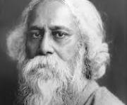

Ravindernath Tagore
1861-1941
A great poet ,philsopher,music composer and a leader of
Ravindernath Tagore Born on 7 May 1861 in a wealthy and prominent Brahmin family of Bengal (Calcutta).Rabindranath Tagore develop an early love for literature, and had
begun reading biographies, poems, history, Sanskrit and several others by the age of 12..
